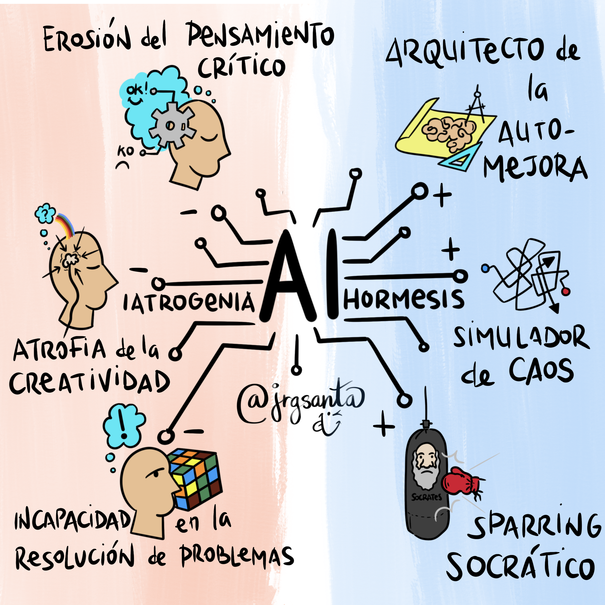

Superando obstáculos para alcanzar el éxito
Confianza en sí mismo ante nuevos desafíos: A pesar de poseer amplias capacidades profesionales, experiencia laboral y una gran disposición para aprender, en ocasiones dudo de mis propias habilidades antes de iniciar nuevos proyectos.
Corregir esta habilidad implica fortalecer mi confianza mediante la valoración de mis logros, el reconocimiento de mis competencias y la adopción de una actitud más segura frente a los desafíos.

Autoexigencia elevada: Me establezco estándares muy altos para mi desempeño, lo que genera temor a cometer errores.
Miedo al fracaso o a no cumplir las expectativas: Antes de asumir nuevos retos, me preocupo excesivamente por los resultados.
Sobrecarga de responsabilidades: La combinación de estudios, trabajo y compromisos me genera dudas sobre mi capacidad para asumir nuevas tareas.
Pérdida de oportunidades de crecimiento: Me limito a participar en proyectos y actividades que contribuyen a mi desarrollo profesional y personal.
Retraso en la toma de decisiones: Mi falta de confianza puede ocasionar que analice demasiado las situaciones antes de actuar.
Incremento del estrés y la ansiedad: Las dudas constantes sobre mis capacidades pueden afectar mi bienestar emocional y mi rendimiento en diferentes ámbitos.
Reconocer y registrar los logros alcanzados: Llevar un diario de metas cumplidas, proyectos concretados y reconocimientos recibidos para fortalecer la autoconfianza con evidencia real.
Fortalecer el desarrollo personal y profesional: Participar en cursos, talleres o capacitaciones sobre liderazgo, comunicación asertiva y desarrollo de habilidades para enfrentar nuevos desafíos con mayor seguridad.
Practicar el pensamiento positivo: Considerar los errores como oportunidades de crecimiento y aprendizaje, reemplazando la autocrítica destructiva por una evaluación constructiva y motivadora.